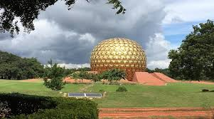
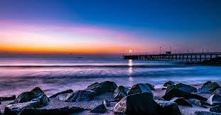
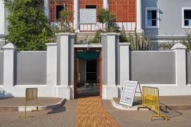
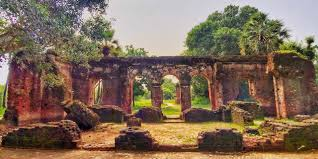

Auroville

An experimental universal township known as the 'City of Dawn,' dedicated to human unity, featuring the spectacular golden Matrimandir (Temple of the Mother)
French Quarter

The historic heart of the city, famous for its grid-pattern streets, mustard-yellow colonial villas, French architecture, and quaint European-style cafés.
Promenade Beach

A popular seafront stretch in the city centre, closed to traffic in the evenings, perfect for leisurely strolls, featuring the Gandhi statue and the Old Lighthouse.
Aurobindo Ashram

The Limestone Caves in Baratang Island are a natural wonder formed over thousands of years by the interaction of carbon dioxide with minerals, resulting in beautiful stalactites and stalagmites.
Arikamedu

The Limestone Caves in Baratang Island are a natural wonder formed over thousands of years by the interaction of carbon dioxide with minerals, resulting in beautiful stalactites and stalagmites.